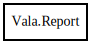

Report
Object Hierarchy:

Description:
public class Report
Namespace to centralize reporting warnings and errors.
Content:
Enums:
Constants:
Properties:
Delegates:
Static methods:
Creation methods:
Methods:
- public bool set_colors (string str, Colored colored_output = AUTO)
Set all colors by string
- public void set_verbose_errors (bool verbose)
Set the error verbosity.
- public int get_warnings ()
Returns the total number of warnings reported.
- public int get_errors ()
Returns the total number of errors reported.
- private void report_source (SourceReference source)
Pretty-print the actual line of offending code if possible.
- private void print_highlighted_message (string message)
- private void print_message (SourceReference? source, string type, string type_color_start, string type_color_end, string message, bool do_report_source)
- public virtual void note (SourceReference? source, string message)
Reports the specified message as note.
- public virtual void depr (SourceReference? source, string message)
Reports the specified message as deprecation warning.
- public virtual void warn (SourceReference? source, string message)
Reports the specified message as warning.
- public virtual void err (SourceReference? source, string message)
Reports the specified message as error.
- private bool is_atty (int fd)
Fields:
- private string locus_color_start
SGR (Select Graphic Rendition) start tag for source location
- private unowned string locus_color_end
SGR (Select Graphic Rendition) end tag for source location
- private string warning_color_start
SGR (Select Graphic Rendition) start tag for warning titles
- private unowned string warning_color_end
SGR (Select Graphic Rendition) end tag for warning titles
- private string error_color_start
SGR (Select Graphic Rendition) start tag for error titles
- private unowned string error_color_end
SGR (Select Graphic Rendition) end tag for error titles
- private string note_color_start
SGR (Select Graphic Rendition) start tag for note titles
- private unowned string note_color_end
SGR (Select Graphic Rendition) end tag for note titles
- private string caret_color_start
SGR (Select Graphic Rendition) start tag for caret line (^^^)
- private unowned string caret_color_end
SGR (Select Graphic Rendition) end tag for caret line (^^^)
- private string quote_color_start
SGR (Select Graphic Rendition) start tag for quotes line ('...',
`...`, `...')
- private unowned string quote_color_end
SGR (Select Graphic Rendition) end tag for quotes line ('...', `...`,
`...')
- protected int warnings
- protected int errors
- private bool verbose_errors
- private bool _enable_warnings
- private static Regex val_regex